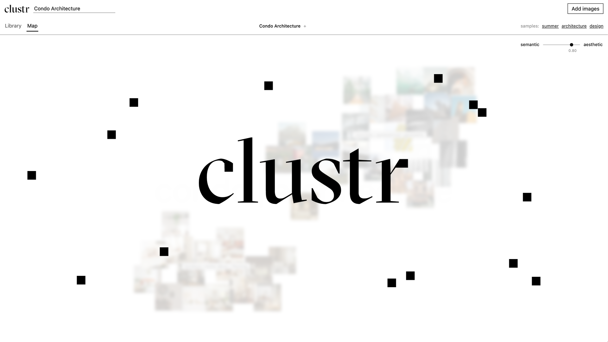
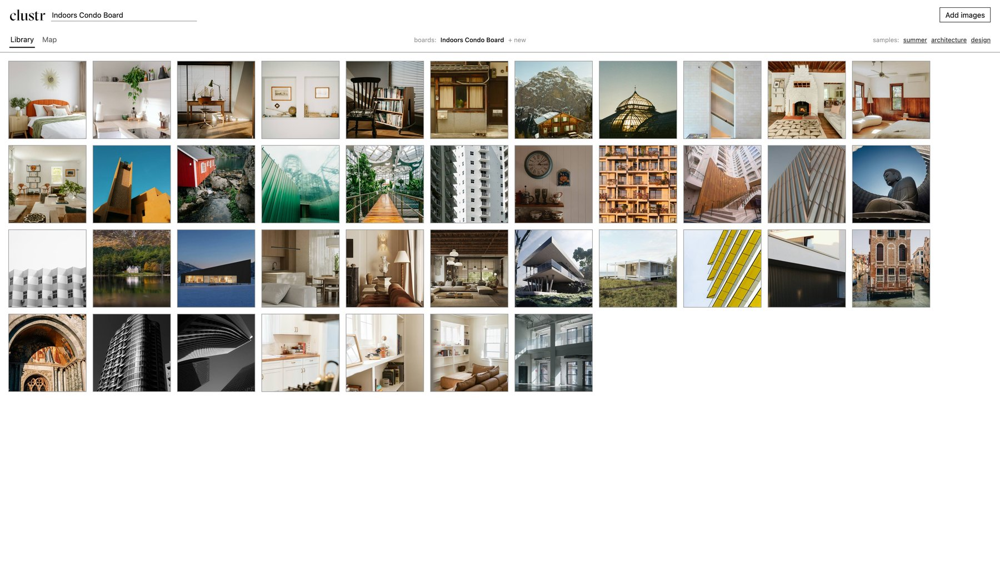
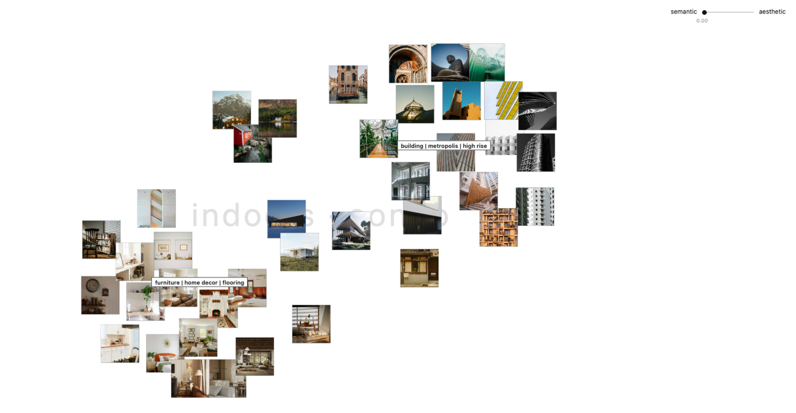
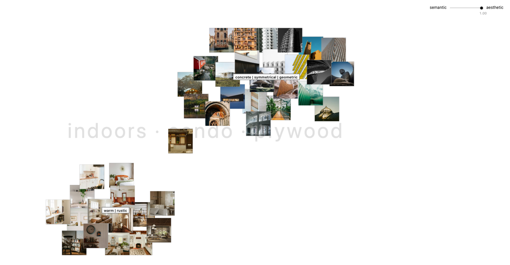

My moodboards get messy quickly. Often I can feel a direction forming but find it hard to verbalize it. I wanted to use computer vision to bring these patterns to the surface, while keeping the experience playful.
Clustr is a prototype that sorts a collection of images into labeled groups. It pairs two different vision models (CLIP and DINO), letting the user blend grouping by subject with grouping by look to suit their boards.
This project started while using Pinterest. Every day, users save and hand sort millions of images. AI labs pay people to do this kind of work for training models, while Pinterest users willingly do it for free. I see this as an opportunity to return that effort into an easier and more enjoyable experience.
Computer vision is often pictured in high-stake scenarios such as surveillance, where it is judged on accuracy. Instead, I want to use computer vision as part of my creative process. With this in mind, I designed for suggestion rather than certainty, even if the grouping isn't perfect, leaving the final call to the user.
Images from the same moodboard already share common themes, so I used those words to automatically name the board. The more interesting labels come from the subgroups. Similar to TF-IDF, each cluster's labels favor words that only describe it and not the others, penalizing universally applicable words. This approach however is prone to force patterns that do not exist, so I needed to implement a minimum threshold.
There is no single correct approach to interpreting a moodboard, so instead of committing to one, Clustr uses a slider that blends grouping by subject (CLIP) and grouping by visual similarity (DINO). The two models do not naturally share a scale, so each board needs to be rescaled. The point is not to find the best cluster, it is to let the user explore whatever grouping is useful for their board.
I planned to test on Pinterest boards, but Pinterest doesn't give up images or metadata easily. Fortunately Unsplash has a public dataset of images with AI-generated tags. I kept the top 400 tags, where they stayed useful before getting too noisy. However, those tags are almost all nouns, which suits the subject end of the slider but leaves the aesthetic end with less to say. So I generated a matching list of 66 adjectives that the labels shift toward as α moves toward DINO.
The board on the right is a sample collection from Unsplash, "Architecture", 40 images loaded
into Clustr's library.
Unsorted, it doesn't signal much beyond architecture. Clustr titled the board "Indoors,
Condo". These are the strongest universally applicable labels in the vocabulary list.
In the Map View, set at α = 0.00 (semantic end using only CLIP) the images split into two
clusters:
interiors and exteriors, labeled "furniture, home decor, flooring" and "building, metropolis,
high rise."
At α = 1.00 (aesthetic end using only DINO) cluster membership does not change much, but how
the images are positioned and their cluster labels do: "warm, rustic" on one side and "concrete,
symmetrical, geometric" on the other.
Using Clustr I can quickly interpret that the board predominately features Mid-Century Modern
interiors and Brutalist exteriors, something that I wouldn't immediately intuit while looking at
the original collection.



This started to prove a point that moodboard tools are sitting on a gold mine for fun
interactions using computer vision. The project turned out way better than I expected.
I first started building with a vision of watching the images rearrange themselves into
clusters,
then worked backwards from there. The most challenging part was putting myself in the shoes
of the user
rather than being guided only by accuracy metrics. There were several levers I needed to
balance, such as accuracy, flexibility, visual appeal, and speed.
As a proof of concept, its biggest limit is vocabulary. Unsplash's tags were the most
accessible option, but certainly not the most useful. A more intelligent vocabulary
would make Clustr's labels much more meaningful.